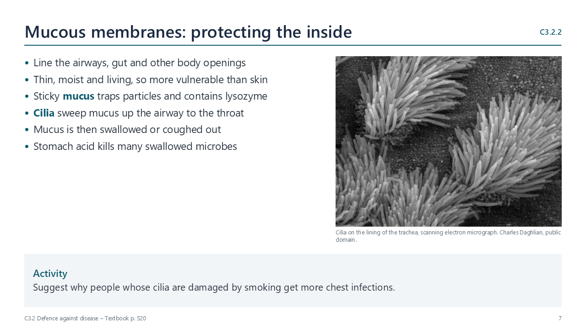
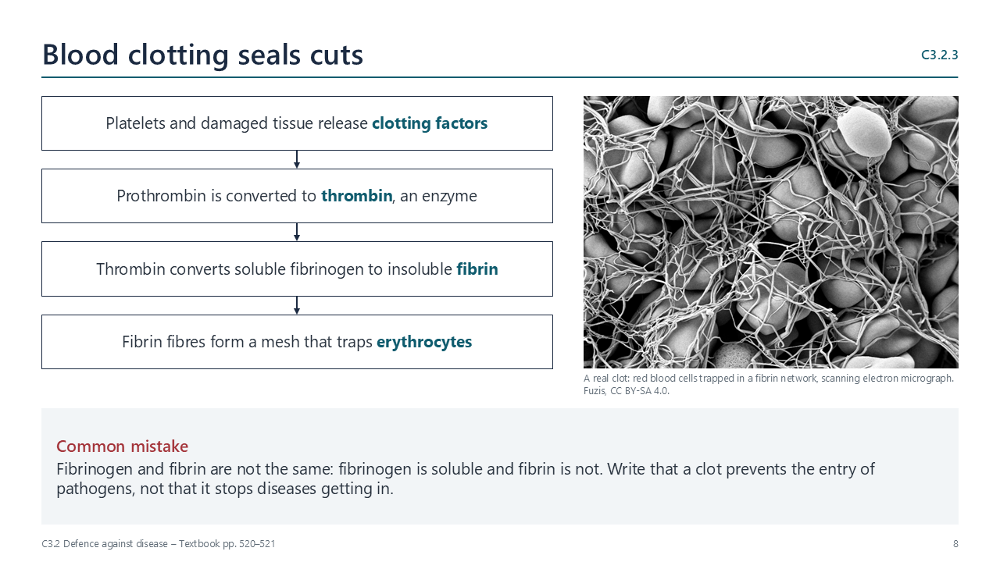
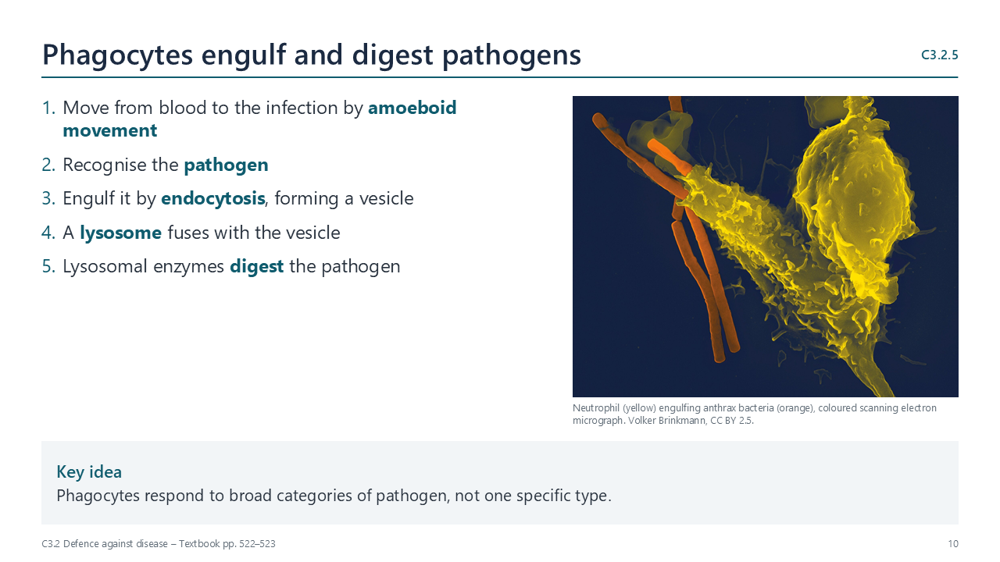
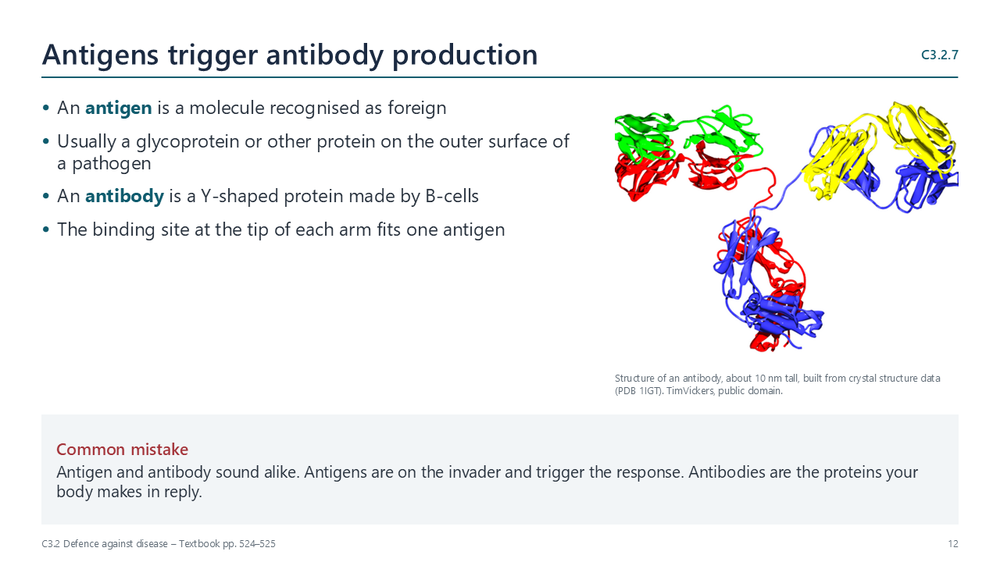
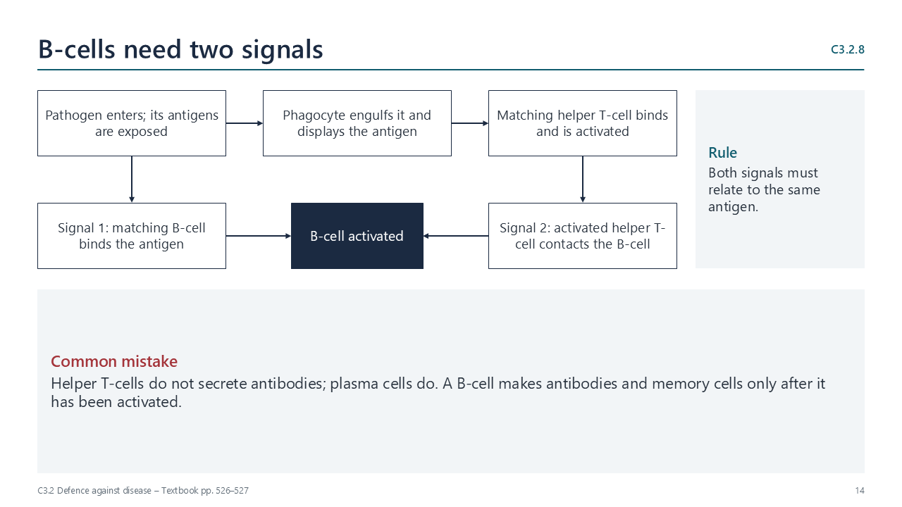
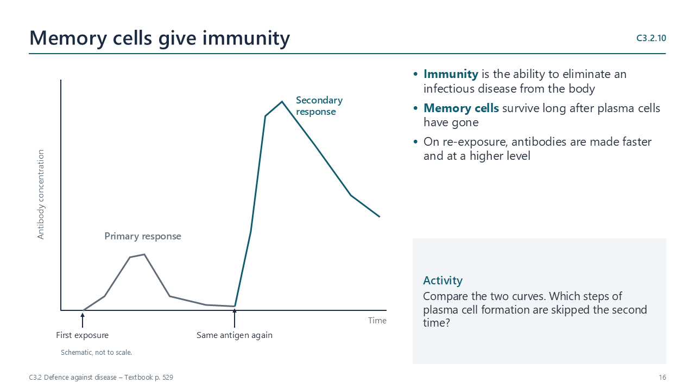
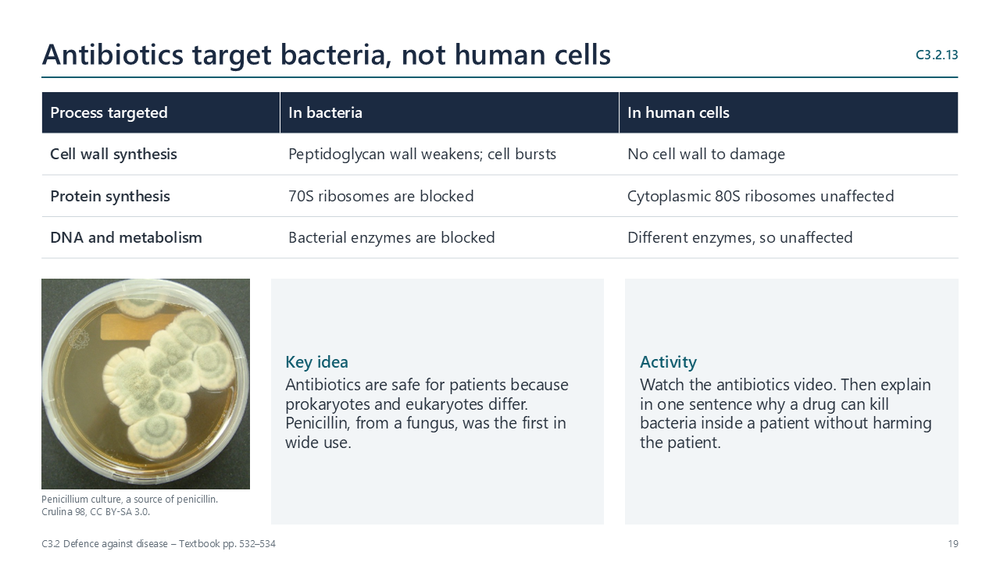
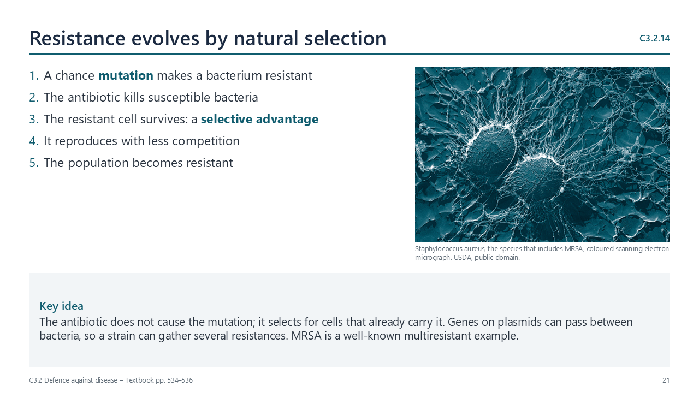
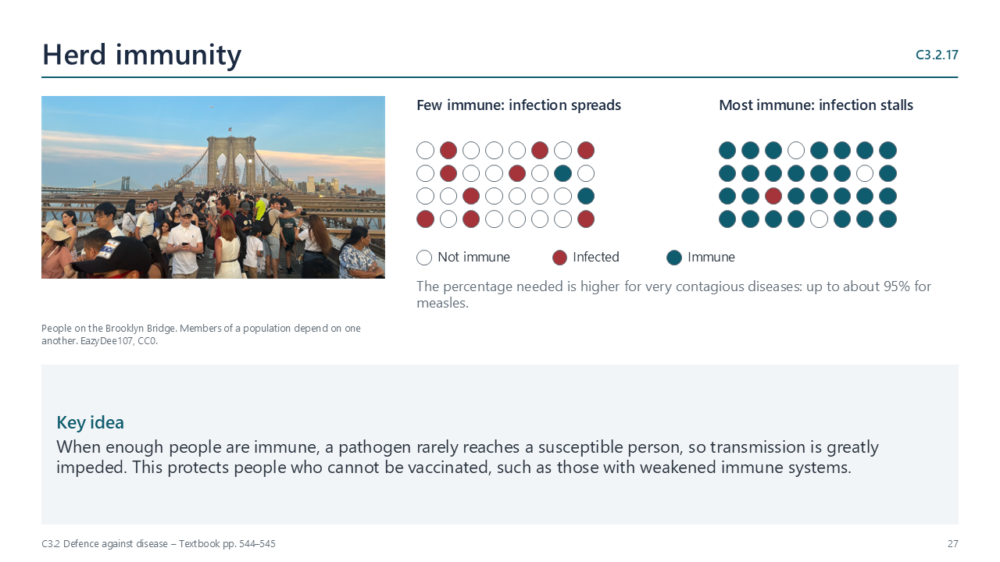

Written for this site from the course textbook and class slides. Use the page numbers to read the book's fuller account. Image credits are on slide 31.
Getting in
C3.2.1
Pathogens are what cause infectious disease
pp. 517–518
A pathogen is anything living or virus-like that causes disease in a host. Because pathogens can pass between hosts, the illnesses they cause are called infectious or communicable. That separates them from conditions such as cancer, malnutrition or inherited disorders, which you cannot catch.
The word is mainly used for four groups, and each has features you can use to identify it:
Bacteria: prokaryotes with a peptidoglycan wall. Most species are harmless; those that are not include the causes of cholera and tuberculosis.
Viruses: not cells. A virus is nucleic acid in a protein coat and can reproduce only inside a host cell, so every virus is a parasite.
Fungi: eukaryotes with chitin walls, responsible for infections such as athlete's foot.
Protists: single-celled eukaryotes, including the parasite that causes malaria.
Some parasitic worms also cause human disease. No archaeon is known to be a human pathogen, and scientists still debate why.
C3.2.2
How skin and mucous membranes act as the first defence
pp. 519–520
The first job is to stop pathogens entering at all.
Skin defends in two ways. As a physical barrier, its outer layer of dead, keratin-filled cells is tough and sealed with lipid, and shedding removes microbes that settle on it. As a chemical barrier, its secretions lower the surface pH and sweat contains lysozyme, an enzyme that damages bacterial walls.
Mucous membranes line the airways, gut and other openings. They are thin and living, so they need more protection. Mucus traps particles, and in the airways, cilia sweep it up to the throat to be swallowed. Stomach acid then kills many of the microbes that arrive.

Exam note: you do not need to draw or label skin.
C3.2.3
How blood clotting closes cuts in the skin
pp. 520–521
A cut breaks the barrier, so it must be sealed quickly. Doing this limits blood loss and keeps pathogens out.
Platelets collect at the wound and stick together, which is enough to plug a tiny break.
Platelets and damaged tissue release clotting factors, starting a cascade.
The cascade converts prothrombin into the enzyme thrombin.
Thrombin rapidly converts soluble fibrinogen into insoluble fibrin fibres.
The fibres form a mesh that traps erythrocytes, and this is the clot.

Watch out: fibrinogen is the soluble starting material and fibrin is the insoluble product. Write that a clot "prevents the entry of pathogens", not that it "stops diseases getting in".
Fighting back
C3.2.4
How innate and adaptive immunity differ
p. 522
Innate
Adaptive
Responds to
Broad categories of pathogen
One particular pathogen
During your life
Stays the same
Builds a memory of pathogens met
On re-exposure
No improvement
Faster and more effective
Cells to know
Phagocytes
Lymphocytes
Both start when a pathogen gets past the surface barriers. The only innate component you must know is the phagocyte.
C3.2.5
How phagocytes help to control infection
pp. 522–523

Phagocytes are white blood cells that leave the blood by amoeboid movement, squeezing through capillary walls and crawling to the infected tissue. They recognise a pathogen, engulf it by endocytosis so it sits inside a vesicle, then fuse a lysosome with that vesicle. Lysosomal enzymes digest the pathogen.
C3.2.6
How lymphocytes work together in adaptive immunity to make antibodies
pp. 523–524
Lymphocytes circulate in the blood and are also held in lymph nodes. Two kinds matter here: B-cells, which go on to make antibodies, and helper T-cells, which activate B-cells.
You carry a huge number of different B-cell types. Each type can make one specific antibody. That variety lets the body respond to almost any antigen, but it also means only a few cells match any one antigen when it first appears.
C3.2.7
Antigens: molecules that are recognised and set off antibody production
pp. 524–525
An antigen is a molecule that the immune system recognises as foreign and that triggers antibody production. Most are glycoproteins or other proteins, usually on the pathogen's outer surface.
An antibody is a Y-shaped protein made by B-cells. The binding site at the tip of each arm fits one particular antigen.
Red blood cells have antigens too. Group A cells given to someone with group B blood will be recognised as foreign, which can stimulate antibody production. This is why donated blood is matched.

C3.2.8
How helper T-cells activate B-cells
pp. 526–527
A B-cell stays inactive until it receives two signals:
Direct contact with its specific antigen.
Contact with a helper T-cell that has been activated by the same antigen.
A phagocyte that has engulfed a pathogen displays pieces of it on its surface. A helper T-cell with the matching receptor binds to these and becomes activated. It then finds and activates the B-cell that matches the same antigen.

Watch out: helper T-cells do not secrete antibodies. Their role is to activate the B-cell.
C3.2.9
How activated B-cells multiply into clones of plasma cells that secrete antibody
pp. 527–528
Too few B-cells match any one antigen to make enough antibody. So an activated B-cell first divides repeatedly by mitosis, forming a clone of identical cells. Most of them become plasma cells, whose rough ER makes large amounts of the same antibody for secretion. This process is known as clonal selection.
C3.2.10
How keeping memory cells gives immunity
p. 529
Immunity means being able to eliminate an infectious disease from the body. After an infection, plasma cells and antibodies decline, but some activated lymphocytes survive for the long term as memory cells.
If the same antigen returns, the memory cells respond at once. Antibodies are produced more rapidly and to a higher level, often before you feel ill. Use both comparisons in an exam answer.

When defence fails
C3.2.11
How HIV passes between people in body fluids
p. 530
HIV passes from one person to another in body fluids, for example through sexual intercourse, shared hypodermic needles, breastfeeding and transfusions or transplants from unscreened donors. It does not pass through sharing a glass or towel, and mosquitoes do not transmit it.
The implications are practical. Condoms, clean needles and screening of donated blood all break the route of transmission, and knowing how HIV does not spread helps to reduce stigma.
Watch out: HIV is transmitted. AIDS is the condition that can follow, and it is not itself transmitted.
C3.2.12
How HIV infects lymphocytes and leads to AIDS
pp. 529–531
HIV is a retrovirus. Proteins on the virus bind to receptors called CD4 on helper T-cells, and its RNA core enters the cell. The enzyme reverse transcriptase copies the RNA into DNA, which is inserted into a host chromosome. The cell can then make new viruses, and over time infected lymphocytes are lost.
Only certain types of lymphocyte are infected, but losing them has wide effects. With fewer helper T-cells, fewer B-cells are activated and antibody production falls. The body then cannot fight opportunistic infections that a healthy person would normally overcome. This stage is AIDS, acquired immunodeficiency syndrome.
Medicines
C3.2.13
Antibiotics: chemicals that block processes in bacteria but leave eukaryotic cells unharmed
pp. 532–534
Antibiotics can treat a patient safely because bacteria and human cells differ. They target features found only in prokaryotes, such as cell wall synthesis or 70S ribosomes. Human cells have no cell wall and have different ribosomes in their cytoplasm, so they are not harmed.
Viruses have no cell wall, no ribosomes and no metabolism of their own. There is nothing for an antibiotic to act on, so it will not control a viral infection.

Watch out: it is wrong to say that antibiotics fail because viruses "hide inside cells". The reason is that viruses lack the structures antibiotics act on.
C3.2.14
How pathogenic bacteria evolve resistance to several antibiotics
pp. 534–537

This is natural selection. A random mutation, or a gene gained from another bacterium on a plasmid, makes a cell resistant. When an antibiotic is used, the susceptible bacteria die and the resistant ones survive and reproduce with less competition. Repeating this with different antibiotics can produce multiresistant strains such as MRSA.
Careful use slows this down: prescribing antibiotics only when needed, finishing the course, keeping hospitals hygienic and limiting routine use in farming. It matters because new antibiotics are hard to develop.
Crossing species
C3.2.15
Zoonoses: infectious diseases that can pass from other species to humans
pp. 537–540
A zoonosis is an infectious disease that can transfer from another species to humans. Many pathogens stick to one host, but others cross, especially when people and animals live closely together.
Disease
Pathogen
Animal source
Route to humans
Tuberculosis
Bacterium (zoonotic form: M. bovis)
Cattle
Raw milk, contact with infected animals or tissue
Rabies
Virus
Dogs and other mammals
Bite, or saliva on broken skin
Japanese encephalitis
Virus
Pigs and wading birds
Mosquito bite
COVID-19
Virus (SARS-CoV-2)
Probably from bats; exact route not confirmed
Now spreads between humans
COVID-19 shows how serious a recent transfer can be, with worldwide effects on health and daily life.
Protecting everyone
C3.2.16
How vaccines and immunization work
pp. 540–542
A vaccine contains antigens, or DNA or RNA coding for antigens. It may be a weakened or inactivated pathogen, a purified part of one, or a nucleic acid such as the mRNA in some COVID-19 vaccines. It stimulates a primary immune response and the production of memory cells, without causing the disease. If the real pathogen arrives later, the fast secondary response deals with it.
Going further: active and passive immunity
Not required by the syllabus statements, but covered on p. 541. Active immunity means your own B-cells made the antibodies and memory cells, after an infection or vaccine. Passive immunity means you received ready-made antibodies, such as across the placenta, and it fades because no memory cells form.
C3.2.17
How herd immunity helps to prevent epidemics
pp. 544–545
A population does not need everyone to be immune to stop a disease. When a high enough percentage is immune, the pathogen seldom reaches a susceptible person, so transmission is greatly impeded. This is herd immunity.
Its members depend on each other: those who can be vaccinated help protect those who cannot. The percentage needed varies with the disease and is higher for very contagious ones such as measles.

C3.2.18
Evaluating data from the COVID-19 pandemic
pp. 546–547
Percentage change
(new − original) ÷ original × 100
Over time, or vaccine compared with placebo. In one vaccine trial, 162 cases with placebo and 8 with vaccine, in groups of similar size: (162 − 8) ÷ 162 × 100 = 95.1% fewer cases.
Percentage difference
difference ÷ average × 100
Two values at the same time. Invented example: 150 and 90 cases per 100 000 in two countries: (150 − 90) ÷ 120 × 100 = 50%.
When you evaluate data, think about what else could explain a pattern, such as the amount of testing, how cases are reported, or differences in public health rules. Try it with real figures on the WHO COVID-19 dashboard; slide 29 gives the steps.
Videos
Select a video to play it here. Select it again to close it.
Print this guide and complete it as you work through the slides and videos. It asks for your own explanations, so close the notes while you try each section.
A printable worksheet covering all 18 statements, from quick recall to data questions and longer answers. It has 70 marks and takes about 70 minutes, or you can do one section at a time.